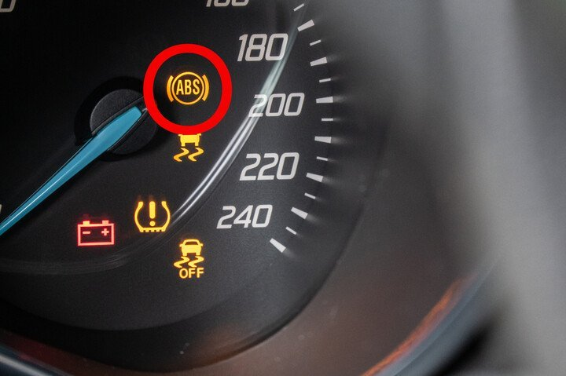

Je moet een noodstop maken met de auto. Je remt en het ABS-systeem treedt in werking. Wat moet je vervolgens doen?

- Je lost het rempedaal en begint opnieuw zachtjes te remmen.
- Je lost het rempedaal en begint opnieuw hard te remmen.
- Je houdt het rempedaal ingedrukt.
Bij een noodstop wil je zo snel mogelijk je snelheid verminderen. Door het rempedaal ingedrukt te houden wanneer het ABS-systeem in werking treedt, zal je optimaal je maximum remkracht blijven benutten en kan je blijven sturen.